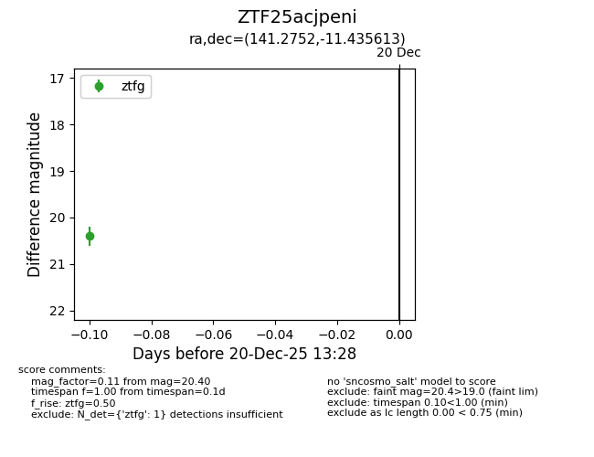
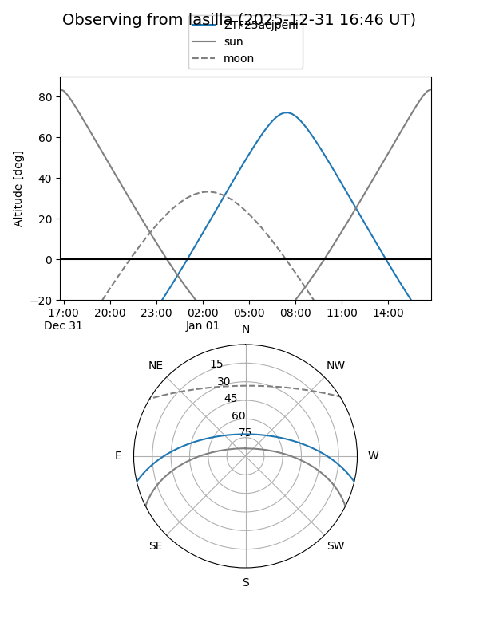
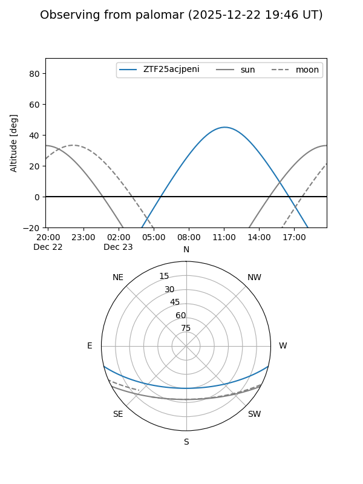

ZTF25acjpeni
Target ZTF25acjpeni at 2025-12-22 14:03
Aliases and brokers:
FINK: fink-portal.org/ZTF25acjpeni
Lasair: lasair-ztf.lsst.ac.uk/objects/ZTF25acjpeni
ALeRCE: alerce.online/object/ZTF25acjpeni
alt names
ZTF25acjpeni (ztf,fink_ztf)
Coordinates:
equatorial (ra, dec) = 141.2752,-11.43561
equatorial (HMS+DMS) = 09:25:06.06,-11:26:08.21
galactic (l, b) = (243.5312,+26.84777)
Flags:
Photometry:
last ztfg=20.40
1 ztfg detections
Lightcurve

Visibility


Additional plots